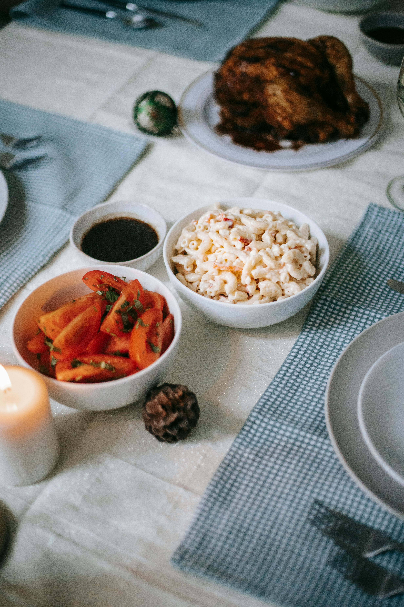

Mac Salad Recipe
Mac Salad is a classic dish that is easy and quick! It is pasta dish that is served cold and made with elbow macaroni. Takes less than 30 minutes and can be a perfect side for a family, or for a meal prep option.
Ingredients
- 1 pound of uncooked elbow macaroni
- Mayonaise (specifically "Best Foods" brand)
- 1/4 cup of milk
- 2 tablespoons of apple cider vinegar
- 2 shredded carrots
- 1/4 cup of red onion
- kosher salt
- ground pepper
- mustard
Steps
- Cook and rinse the the macaroni. Then place into a bowl with the vinegar, carrot, and onion. Store it into the fridge for 20 mins or until cooled.
- In a seperate bowl, mix the mayonaise, salt, pepper, milk and mustard mustard. Mix the mayo mixture with the cooled macaroni.
- Cover and refrigerate for around 3 to 4 hours.
- Add salt and pepper if needed. Gentle stir and serve!
